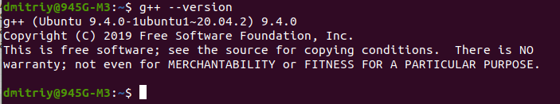
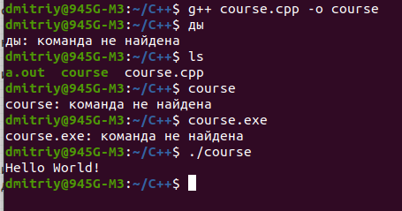

Первая программа на С++
С++ является компилируемым языком, а это значит, что компилятор транслирует исходный код на С++ в исполняемый файл, который содержит набор машинных инструкций. Но разные платформы имеют свои особенности, поэтому скомпилированные программы нельзя просто перенести с одной платформы на другую и там уже запустить. Однако на уровне исходного кода программы на С++ по большей степени обладают переносимостью, если не используются какие-то специфичные для текущей ос функции. А наличие компиляторов, библиотек и инструментов разработки почти под все распространенные платформы позволяет компилировать один и тот же исходный код на С++ в приложения под эти платформы.
В отличие от Си язык C++ позволяет писать приложения в объектно-ориентированном стиле, представляя программу как совокупность взаимодействующих между собой классов и объектов. Что упрощает создание крупных приложений.
В 1998 году была предпринята первая попытка по стандартизации языка организацией ISO (International Organiztion for Standartization). Первый стандарт получил название ISO/IEC 14882:1998 или сокращенно С++98. В дальнейшем в 2003 была издана новая версия стандарта C++03.
В 2011 году был издан новый стандарт C++11, который содержал множество добавлений и обогащал язык С++ большим числом новых функциональных возможностей. С тех пор было выпущено еще ряд стандартов. На момент написания данной статьи самый последний стандарт - C++20 был опубликован в декабре 2020 года. В 2023 году ожидается выход стандарта C++23
Как писать и запускать программы на С++
Для написания программ на языке С++ как минимум необходимы два компонента: текстовый редактор, с помощью которого можно набрать исходный код, и компилятор, который принимает файл с исходным кодом и компилирует его в исполняемый файл. В качестве текстового редактора можно выбрать любой понравившийся. Я бы посоветовал кросcплатформенный редактор Visual Studio Code, который поддерживает плагины для разных языков, в том числе для C++.Если с текстовым редактором относительно просто - можно выбрать любой, то выбор компилятора может действительно стать проблемой. Поскольку в настоящий момент есть очень много различных компиляторов, которые могут отличаться по различным аспектам, в частности, по реализации стандартов. Базовый список компиляторов для С++ можно посмотреть в википедии. А на странице https://en.cppreference.com/w/cpp/compiler_support можно ознакомиться с поддержкой компиляторами последних стандартов. В общем случае нередко рекомендуют хотя бы ознакомиться как минимум с тремя основными компиляторами:
- g++ от проекта GNU (в составе набора компиляторов GCC)
- Clang (доступен в рамках проекта LLVM)
- компилятор C++ от компании Microsoft (используется в Visual Studio)
Чтобы убедиться, что компилятор установлен, достаточно открыть командное окно и ввести команду:
g++ --versionЕсли отобразится версия, значит, все настроено и готово к работе. Иначе, необходимо установить компилятор.
У меня на ubuntu 20.04 уже установлен компилятор g++:

Как установить компилятор на Windows, описано здесь.
Первая программа на Linux. Компилятор g++
В домашнем каталоге создал папку С++
Далее:
cd C++ touch course.cppС помощью последней команды создал файл course.cpp
Программы на языке С++ принято сохранять с расширением cpp
В нем записал программу:
// Первая программа на языке С++
#include <iostream> // подключаем заголовочный файл
int main()
{
std::cout << "Hello World!" << std::endl; //вывод сообщения на терминал
return 0;
}
|
Теперь скомпилируем эту программу
Переходим в папку файла:cd C++
Чтобы скомпилировать исходный код, необходимо компилятору gcc передать в качестве параметра файл hello.cpp:
g++ hello.cpp -o helloКроме имени файла с исходным кодом компилятору передается параметр -o hello. Он указывает, что мы хотим скомпилировать файл по имени hello. Если этот параметр не передать, то будет создан файл с именем по умолчанию - a.out.
В итоге после выполнения выше приведенной команды в папке с файлом hello.cpp появится скомпилированный файл, который будет называться hello. И мы сможем его запустить с помощью следующей команды:
./helloПоследняя команда верна на ubuntu, для windows достаточно набрать: hello
Теперь мои действия:
Выполнил команду: g++ course.cpp -o course
В папке файла кроме course.cpp появились файлы a.out и course без расширения.
Далее выполнил команду: course
Сообщение: course: команда не найдена
Почитал инструкцию, немного я не так сделал.
Выполнил:
./course

Для того, чтобы автоматически запустить приложение после компиляции, можно использовать следующую команду:
g++ source.cpp & ./a.outМожно налепить в одну команду различные опции:
g++ -std=c++20 -Wall -pedantic app.cpp -o app & app
Теперь разбор выше написанной программы:
Конструкция:std::cout << "Hello World!" << std::endl;отвечает за вывод информации в стандартный выходной поток. Здесь в глаза бросается фрагмент «std::…». Ключевое слово std – это предопределенное название пространства имен, так называемой, стандартной библиотеки языка С++. Как я отмечал во вступлении, в язык С++ на уровне стандарта включили библиотеку STL, которая заметно упрощает работу со сложными коллекциями и типами данных, таких как:
- строки (std::string);
- массивы (std::array);
- динамический массив (std::vector);
- двухсвязный список (std::list);
- очередь (std::deque);
- упорядоченные множества (std::set);
- упорядоченные ассоциативные массивы (std::map)
Ввод-вывод с помощью объектов cin и cout
Разберем работу двух объектов:- cin – объект класса istream для работы с потоком stdin;
- cout – объект класса ostream для работы с потоком stdout.
Вообще, сам термин "поток" в данном случае представляет последовательность символов, которая записывается на устройство ввода-вывода или считывается с него. И в данном случае под устройством ввода-вывода рассматривается консоль.
Для записи или вывода символов на консоль применяется объект cout, который представляет тип ostream. А для чтения с консоли используется объект cin
Для использования этих объектов в начало исходного файла необходимо подключить библиотеку iostream:
#include <iostream>
Вывод на консоль
Начнем с более простого объекта cout. Чтобы им воспользоваться, в программе на С++ вначале необходимо подключить файл iostream. После этого в пространстве имен std будет доступен объект cout. Затем, объявим в программе несколько переменных разных типов и выведем их в стандартный поток с помощью cout. Сделать это можно следующим образом:
#include <iostream>
int main()
{
char str[100] = "Hi, Sergey!";
short old = 99;
double weight = 82.54;
std::cout << str << "\n";
std::cout << old << "\n"; //перевод строки можно по разному делать
std::cout << weight << std::endl;
}
Первое, что бросается в глаза – это вывод значения переменной без дополнительного указания ее типа. Например, если бы мы эту же операцию захотели бы повторить с помощью функции printf(), то пришлось бы прописывать форматную строку со спецификаторами:printf("%s\n%d\n%.2f\n", str, old, weight);
Если кому интересно, как это все работает «под капотом», то скажу буквально пару слов. У каждого класса в С++ можно делать переопределение стандартных операций. В частности, операция << для класса ostream переопределена для каждого стандартного, базового типа и компилятор в соответствии с типом переменной (или, в общем случае, по данным в правом операнде), выбирает соответствующую реализацию операции <<. Сама же операция << выполняет передачу в выходной поток stdout соответствующих данных и возвращает объект cout. А раз так, то мы можем записать вывод трех переменных следующим образом:
std::cout << str << '\n' << old << "\n" << weight << std::endl;Получим абсолютно тот же самый результат.
Второе, на что следует обратить внимание – это использование управляющих символов ‘\n’. Сначала я его прописал, как символ, а второй раз – как строку. Для объекта cout это не имеет большого значения, но, конечно, если нам нужно вывести отдельный символ, то лучше это делать через одинарные кавычки.
В самом конце вывода прописана функция endl. Она выполняет два действия: переводит курсор на новую строку и очищает выходной буфер, указывая конечному устройству, связанному с выходным потоком, что все данные переданы и их можно обрабатывать. В случае с выводом на монитор очистка мало что дает, т.к. информация сразу отображается на экране. Но, вполне могут быть и другие ситуации, когда вместо монитора подключено другое устройство и вывод осуществляется только в момент очистки выходного буфера.
Ввод с консоли
Следующий объект cin работает похожим образом, но осуществляет уже считывание информации из стандартного входного потока stdin и запись прочитанных данных в указанную переменную или, в общем случае, lvalue выражение.Давайте, для примера выполним считывание данных в переменные old и weight с помощью cin следующим образом:
#include <iostream>
int main()
{
char str[100] = "Hi, Sergey!";
short old = 99;
double weight = 82.54;
std::cin >> old;
std::cin >> weight;
std::cout << str << '\n' << old << '\n' << weight << std::endl;
}
Если данные введены верно (целочисленное значение и вещественное), то переменные old и weight будут содержать корректные введенные значения. Причем ввести их можно каждый с новой строки или через пробел. Если во входном потоке stdin встречаются данные, не соответствующие типу переменной, то значение переменной обнуляется с неверной интерпретацией последующих операций считывания. Поэтому формат входных данных в stdin должен совпадать с типами читаемых данных.
Операция >> после чтения порции данных возвращает объект cin, поэтому два последовательных вызова cin можно объединить в один:
std::cin >> old >> weight;Результат будет тем же самым.
Последний важный момент, связанный с использованием объекта cin, это чтение строк из входного потока. Допустим, мы в переменную str читаем строковые данные следующим образом:
std::cin >> str;и вводим строку «hello world». В результате в массив str будет помещен только первый фрагмент до пробела, то есть, «hello», а второй останется во входном потоке. То есть, cin со строками работает так же, как и функция scanf() языка Си. Если вам нужно читать строку целиком (до символа перевода строки или до конца данных), то следует использовать новую функцию getline() языка С++. Она работает с объектом std::string и речь о ней еще впереди.
Пространства имен (namespace)
В языке С++ все объявления переменных вне функции main() попадают в так называемое глобальное пространство имен.Внутри функции main() мы можем обращаться к этим определениям следующим образом:
void foo()
{
std::cout << "function: foo()" << std::endl;
}
int global_a = 5;
struct point {
double x, y;
};
int main()
{
point pt {};
foo();
std::cout << global_a << std::endl;
return 0;
}
или так:
int main()
{
::point pt {};
::foo();
std::cout << ::global_a << std::endl;
return 0;
}
|
Если перед ним (слева) не указана какая-либо область видимости, то подразумевается глобальная область (глобальное пространство имен).
Что нам дает этот символ? Смотрите, если, к примеру, внутри функции main() объявить еще одну переменную с именем global_a:
int global_a = 10;
то мы можем их различать с помощью «четвероточия»:
std::cout << ::global_a << " " << global_a << std::endl;С двумя двоеточиями global_a - это глобальная переменная, без - локальная. Поэтому увидим значения 5 и 10. Поэтому, если мы хотим быть уверены, что обращаемся к глобальной переменной, то перед ее именем достаточно прописать два двоеточия. В ряде случаев это бывает очень полезно.
namespace
Может быть так, что внутри файла могут быть определены две функции с одинаковыми именами или могут быть другие конфликты имен, для решения подобных конфликтов в С++ существует возможность создавать свои пространства имен, которые позволяют разделять один набор определений от другого набора. Для этого используется ключевое слово namespace, после которого указывается название нового или существующего пространства. Например, так:
namespace firstSpace { //foo внутри пространства имен firstSpace
void foo()
{
std::cout << "function from firstSpace: foo()" << std::endl;
}
}
void foo() //foo внутри глобального пространства имен::
{
std::cout << "function: foo()" << std::endl;
}
Здесь название firstSpace мы придумываем сами подобно именам переменных и функций, а, затем, в фигурных скобках следует содержимое этого пространства. В нашем примере там располагается функция с именем foo. Теперь программа будет компилироваться без проблем, так как функции foo() находятся в разных пространствах имен.
Как следует вызывать эти функции внутри main()? Делается это следующим образом:
firstSpace::foo();То есть, сначала указывается название пространства имен, а затем, через два двоеточия элемент этого пространства. В данном случае вызывается функция foo().
Несколько важных деталей. Во-первых, определение одного и того же пространства имен можно определять в разных местах программы (проекта), например, следующим образом:
namespace firstSpace {
void foo()
{
std::cout << "function from firstSpace: foo()" << std::endl;
}
}
namespace firstSpace {
struct point {
double x, y;
};
}
В результате будет создано пространство firstSpace с функцией foo и структурой point. Это эквивалентно тому, если бы мы их прописали в одном определении firstSpace:
namespace firstSpace {
void foo()
{
std::cout << "function from firstSpace: foo()" << std::endl;
}
struct point {
double x, y;
};
}
Данный прием бывает полезен, когда программист разбивает свой проект на несколько файлов и в каждом нужно прописывать свою реализацию одного и того же пространства имен. Тогда в каждом файле достаточно прописать одно и то же имя после ключевого слова namespace.
Второй момент, касается вложенных пространств имен. Например, так:
namespace secondSpace {
namespace functions {
void foo()
{
std::cout << "function from secondSpace: foo()" << std::endl;
}
}
namespace params {
int global_a = 5;
}
}
Соответственно, обращение к элементам такого пространства будет выглядеть следующим образом:
secondSpace::functions::foo(); //foo находится в secondSpace::functions std::cout << secondSpace::params::global_a << std::endl; //global_a находится в secondSpace::params
inline
И последний штрих. Если перед именем вложенного пространства прописать ключевое слово inline, например, так:
namespace secondSpace {
inline namespace functions {
void foo()
{
std::cout << "function from secondSpace: foo()" << std::endl;
}
}
...
}
|
то доступ к функции foo() можно делать следующим образом:
secondSpace::functions::foo(); secondSpace::foo(); //ns functions указывать не обязательно |
То есть, имя inline-пространства указывать не обязательно.
Оператор using
Ссылки: Оператор usingusing. Подключение пространств имен и определение псевдонимов
При чтении и записи в предыдущих темах использовались объекты std::cout и std::cin соответственно. Причем они использовались с префиксом std::. Этот префикс указывает, что объекты cout, cin, endl определены в пространстве имен std. А само двойное двоеточие :: представляет оператор области видимости (scope operator), который позволяет указать, в каком пространстве имен определен объект. И без префикса эти объекты по умолчанию мы использовать не можем.
Однако подобная запись может показаться несколько громоздкой. И в этом случае можно использовать оператор using, который позволяет ввести в программу объекты из различных пространств имен. Использовать его можно в соответствии со следующим синтаксисом:
using пространство имен::элемент;Например, чтобы импортировать объекты cin/cout и функцию endl в текущий модуль в глобальное пространство имен, достаточно прописать:
#include <iostream>
using std::cout;
using std::cin;
using std::endl;
int main()
{
char str[50];
cin >> str; //вместо std::cin пишем только cin
cout << "Hello, " << str << "!" << endl; //вместо std::cout пишем только cout
return 0;
}
Если же этот оператор прописать в каком-либо блоке, например, в теле функции main(), то импорт будет сделан в пределах этого блока:
#include <iostream>
int main()
{
using std::cout;
using std::cin;
using std::endl;
char str[50];
cin >> str;
cout << "Hello, " << str << "!" << endl;
return 0;
}
Соответственно, определения cout, cin и endl доступны теперь только внутри тела функции main() и не доступны за его пределами.
Обычно, на практике, отдельные элементы импортируются в глобальную область или в пространство имен, где их активно предполагается использовать. А вот делать импорт всех определений того или иного пространства имен следует исключительно в локальные области.
Давайте посмотрим, как синтаксически выполняется импорт всего пространства. Для этого также прописывается ключевое слово using, за которым следует еще одно ключевое слово namespace с указанием имени импортируемого пространства. Например:
int main()
{
using namespace std;
// using std::cout;
// using std::cin;
// using std::endl;
char str[50];
cin >> str;
cout << "Hello, " << str << "!" << endl;
return 0;
}
В результате, все определения из std становятся доступными напрямую в теле функции main(). И, еще раз, обратите внимание. Писать подобный импорт в глобальной области – крайне плохая практика. Часто, далеко не все, что прописано в std, используется в текущем модуле. И программист вполне может случайно объявить переменную или функцию или что-либо еще с тем же именем, что и импортированный элемент. Возникнет конфликт имен и компиляция программы завершится с ошибкой. Как раз чтобы этого избежать, лучше явно указывать импортируемые элементы:
using std::cout; using std::cin; using std::endl;Или, в крайнем случае, делать полный импорт в локальную область видимости.
Определение псевдонимов типов
это еще не все, что умеет делать оператор using. С его помощью можно создавать псевдонимы (алиасы) существующих в программе типов данных. Делается это по следующему синтаксису:using <alias> = <тип данных>;Например, в самом простом варианте, можно прописать что-то вроде:
using byte_8 = unsigned char;
В программе появляется новое имя byte_8 базового типа unsigned char, которое полноценно можно использовать следующим образом:
byte_8 byte; byte_8* byte_ptr;Или, такой пример. Пусть у нас в программе объявлено пространство имен с определением функции и структуры:
namespace firstSpace {
void foo()
{
cout << "function from firstSpace: foo()" << endl;
}
struct point {
double x, y;
};
}
Тогда для типа firstSpace::point можно создать псевдоним следующим образом:
using point2D = firstSpace::point;
и использовать его для объявления соответствующей переменной на структуру:
point2D pt;
При этом прежний тип firstSpace::point, конечно же продолжает существовать. Мы лишь создаем еще одно имя этого типа не более того. И using создает псевдонимы именно для типов данных. Например, запись вида:
using func = firstSpace::foo;
приведет к ошибке, т.к. foo – это имя функции, а не тип данных.
Разница между typedef и using NAME = type
Вообще конструкцияusing <alias> = <тип данных>;очень напоминает оператор typedef языка Си. Например, с его помощью мы также можем записать:
typedef unsigned char byte_8; typedef firstSpace::point point2D;
Указатель на функцию через using
На первый взгляд никаких отличий. Но они все же имеются. Оператор using полностью покрывает функциональность оператора typedef и привносит некоторые дополнительные возможности и улучшения. Например, объявление типа указателя на функцию через typedef выглядит так:typedef float (*func_ptr)(int);а с использованием using несколько понятнее и красивее:
using func_ptr = float (*)(int);Но, конечно, главное преимущество using перед typedef проявляются при работе с шаблонами (templates). Но это уже выходит за пределы нашего базового курса по С++. Отмечу лишь, что в современных программах на С++ нет смысла использовать typedef и от него лучше отказываться в пользу оператора using. Хотя это не строгое правило и применение typedef все же допустимо.
============================================================================================================================
Новые типы данных. Приведение типов указателей
Ссылки: Новые типы данных. Приведение типов указателейТипы данных
В С++ присутствуют все стандартные (базовые) типы языка Си, но дополнительно введено еще несколько:
- bool – булевый тип (1 байт), принимающий два состояния true/false;
- wchar_t – расширенный символьный тип (2 байта в ОС Windows; 4 байта в ОС Linux);
- char8_t – символьный тип (1 байт) для символов кодировки Unicode (UTF-8) (добавлен в стандарте С++20);
- char16_t – символьный тип (2 байта) для символов кодировки Unicode (UTF-16);
- char32_t – символьный тип (4 байта) для символов кодировки Unicode (UTF-32).
bool
Логический тип bool может хранить одно из двух значений: true (истинно, верно) и false (неверно, ложно).При выводе значения типа bool преобразуются в 1 (если true) и 0 (если false).
Значение по умолчанию для переменных этого типа - false.
Переменные типа bool обычно используют в условных выражениях. В частности, мы можем записать такую конструкцию:
bool fl_print = false;
fl_print = true; //изменили
if (fl_print) {
std::cout << "Hi!" << std::endl;
}
Вообще, значение false соответствует целому числу 0, а true – единице. Поэтому, запись вида:
fl_print = 1; будет эквивалентна предыдущей. Тип bool и ключевые слова true/false введены для удобства написания и понимания программы. Принципиально нового на уровне машинных кодов ничего не появляется.
Целочисленные типы
Целые числа в языке C++ представлены следующими типами:- signed char: представляет один символ. Занимает в памяти 1 байт (8 бит). Может хранить любой значение из диапазона от -128 до 127
- unsigned char: представляет один символ. Занимает в памяти 1 байт (8 бит). Может хранить любой значение из диапазона от 0 до 255
- char: представляет один символ в кодировке ASCII. Занимает в памяти 1 байт (8 бит). Может хранить любое значение из диапазона от -128 до 127, либо от 0 до 255
Несмотря на то, что данный тип представляет тот же диапазон значений, что и вышеописанный тип signed char, но они не эквивалентны. Тип char предназначен для хранения числового кода символа и в реальности может представлять как signed char, так и unsigned char в зависимости от конкретного компилятора. - short: представляет целое число в диапазоне от –32768 до 32767. Занимает в памяти 2 байта (16 бит).
Данный тип также имеет псевдонимы short int, signed short int, signed short. - unsigned short: представляет целое число в диапазоне от 0 до 65535. Занимает в памяти 2 байта (16 бит).
Данный тип также имеет синоним unsigned short int. - int: представляет целое число. В зависимости от архитектуры процессора может занимать 2 байта (16 бит) или 4 байта (32 бита). Диапазон предельных значений соответственно также может варьироваться от –32768 до 32767 (при 2 байтах) или от −2 147 483 648 до 2 147 483 647 (при 4 байтах). Но в любом случае размер должен быть больше или равен размеру типа short и меньше или равен размеру типа long
Данный тип имеет псевдонимы signed int и signed. - unsigned int: представляет положительное целое число. В зависимости от архитектуры процессора может занимать 2 байта (16 бит) или 4 байта (32 бита), и из-за этого диапазон предельных значений может меняться: от 0 до 65535 (для 2 байт), либо от 0 до 4 294 967 295 (для 4 байт).
Имеет псевдоним unsigned - long: в зависимости от архитектуры может занимать 4 или 8 байт и представляет целое число в диапазоне от −2 147 483 648 до 2 147 483 647 (при 4 байтах) или от −9 223 372 036 854 775 808 до +9 223 372 036 854 775 807 (при 8 байтах). Занимает в памяти 4 байта (32 бита) или.
Имеет псевдонимы long int, signed long int и signed long - unsigned long: представляет целое число в диапазоне от 0 до 4 294 967 295. Занимает в памяти 4 байта (32 бита).
Имеет синоним unsigned long int. - long long: представляет целое число в диапазоне от −9 223 372 036 854 775 808 до +9 223 372 036 854 775 807. Занимает в памяти 8 байт (64 бита).
Имеет псевдонимы long long int, signed long long int и signed long long. - unsigned long long: представляет целое число в диапазоне от 0 до 18 446 744 073 709 551 615. Занимает в памяти, как правило, 8 байт (64 бита).
Имеет псевдоним unsigned long long int.
#include <iostream>
int main()
{
signed char num1{ -64 };
unsigned char num2{ 64 };
short num3{ -88 };
unsigned short num4{ 88 };
int num5{ -1024 };
unsigned int num6{ 1024 };
long num7{ -2048 };
unsigned long num8{ 2048 };
long long num9{ -4096 };
unsigned long long num10{ 4096 };
std::cout << "num1 = " << num1 << std::endl;
std::cout << "num2 = " << num2 << std::endl;
std::cout << "num3 = " << num3 << std::endl;
std::cout << "num4 = " << num4 << std::endl;
std::cout << "num5 = " << num5 << std::endl;
std::cout << "num6 = " << num6 << std::endl;
std::cout << "num7 = " << num7 << std::endl;
std::cout << "num8 = " << num8 << std::endl;
std::cout << "num9 = " << num9 << std::endl;
std::cout << "num10 = " << num10 << std::endl;
}
Но стоит отметить, что все целочисленные литералы по умолчанию представляют тип int. Так, выше переменным разных типов присваивались различные числа - 64, -64, 88, -88, 1024 и т.д. Но все эти целочисленные литералы представляют тип int.
Однако мы можем использовать целочисленные литералы и других типов. Целочисленные литералы без знака (которые представляют unsigned-типы) имеют суффикс u или U. Литералы типов long и long long имеют суффиксы L/l и LL/ll соответственно:
#include <iostream>
int main()
{
unsigned int num6{ 1024U }; // U - unsigned int
long num7{ -2048L }; // L - long
unsigned long num8{ 2048UL }; // UL - unsigned long
long long num9{ -4096LL }; // LL - long long
unsigned long long num10{ 4096ULL };// ULL - unsigned long long
std::cout << "num6 = " << num6 << std::endl;
std::cout << "num7 = " << num7 << std::endl;
std::cout << "num8 = " << num8 << std::endl;
std::cout << "num9 = " << num9 << std::endl;
std::cout << "num10 = " << num10 << std::endl;
}
Тем не менее использовать суффиксы необязательно, поскольку, как правило, компилятор может успешно преобразовать целочисленный литерал типа (который технически представляет тип int) к нужному типу без потери информации.
Если число большое, то при вводе мы можем где-то ошибиться. Чтобы упростить читабельность чисел, начиная со стандарта C++14 в язык была добавлена возможность разделения разрядов числа с помощью одинарной кавычки '
#include <iostream>
int main()
{
int num{ 1'234'567'890 };
std::cout << "num = " << num << "\n"; // num = 1234567890
}
Символьные типы
wchar_t
тип wchar_t используется для представления символов, коды которых выходят за пределы одного байта (типа char). На Windows занимает в памяти 2 байта (16 бит), на Linux - 4 байта (32 бита). Может хранить любой значение из диапазона от 0 до 65 535 (при 2 байтах), либо от 0 до 4 294 967 295 (для 4 байт)Значения wchar_t определяются также как и символы char за тем исключением, что они предваряются символов "L":
wchar_t a1 {L'A'};
Также можно передать код символа
wchar_t a1 {L'\x41'};
Значение, заключенное в одинарные кавычки, представляет собой шестнадцатеричный код символа. Обратная косая черта указывает на начало управляющей последовательности, а x после обратной косой черты означает, что код шестнадцатеричный.
Стоит учитывать, что для вывода на консоль символов wchar_t следует использовать не std::cout, а поток std::wcout:
#include <iostream>
int main()
{
char h = 'H';
wchar_t i {L'i'};
std::wcout << h << i <<'\n';
}
При этом поток std::wcout может работать как с char, так и с wchar_t. А поток std::cout для переменной wchar_t вместо символа будет выводить его числовой код.
Пример с символом кодировки Unicode. Если записать:
wchar_t wch; wch = L'Я';и вывести значение кода буквы ‘Я’:
std::cout << wch << std::endl;
то увидим число 1071. Это значение символа ‘Я’ в кодировке UTF8, т. к. текст программы сохранен в файле в этой кодировки. Причем, смотрите, если мы попытаемся этот же символ присвоить переменной типа char:
char ch = 'Я';
то компилятор выдаст предупреждение, что код символа выходит за диапазон типа char. А вот с латинскими символами таких проблем уже не возникает:
char ch = 'd';
так как их коды не превышают 127.
Еще одно важное отличие языка С++ от Си состоит в том, что символьные литералы, записанные в программе, приводятся компилятором к типу char, а не int, как это было в языке Си. Во всем остальном, работа с отдельными символами или их последовательностями остается прежней. Например, можно объявить строковый литерал следующим образом:
Если мы далее запишем:
Обратите внимание, все эти изменения актуальны для кодировок, отличающихся от кодировки ASCII, где символы латинского и русского алфавитов умещались в диапазон [0; 255], то есть, в один байт. Если, например, используется кодовая страница Windows-1251, то символы можно по-прежнему обрабатывать переменными типа char.
ptr_ch = ptr_i;
Та же самая ситуация возникает и с обобщенным указателем *void языка Си:
ptr_i = (int *)malloc(sizeof(int) * 5);
Если версия компилятора языка С++ позволяет использовать nullptr, то рекомендуется его применять для обозначения «нулевого» указателя.
char msg[] = "I like C++ language";
char msg[30] = "I like C++ language";
Язык С++ позволяет определять функции с одним и тем же именем, но разным набором параметров. Подобная возможность называется перегрузкой функций (function overloading). Компилятор же на этапе компиляции на основании параметров выберет нужный тип функции.
Чтобы определить несколько различных версий функции с одним и тем же именем, все эти версии должны отличаться как минимум по одному из следующих признаков:
При этом различные версии функции могут также отличаться по возвращаемому типу. Однако компилятор, когда выбирает, какую версию функции использовать, ориентируется именно на количество параметров и их тип.
Рассмотрим простейший пример:
int result1 {sum(3, 6)};
int sum(int, int);
Во втором вызове в функцию передаются числа с плавающей точкой:
double result2 {sum(3.3, 6.6)};
Аналогично перегруженные версии функции могут отличаться по количеству параметров:
int modul(int x);
Повторюсь, другие компиляторы языка С++ и даже разные версии одного и того же компилятора, могут по разному строить эти метки. К чему это в итоге приводит? Все верно. Если у нас есть только объектные файлы какого-либо проекта, то не всегда нам удастся его собрать и получить конечный результат, например, в виде исполняемого файла. Мало того, если объектные файлы были созданы компилятором языка Си, в котором не подразумевается перегрузка функций, то кодирование меток точно будет неверным для компилятора С++.
Но вот эта последняя проблема все же решаема. Если мы пишем программу на языке Си и предполагаем использовать ее, в том числе, и на С++, то объявление функций следует поместить в тело директивы extern "C" следующим образом:
В результате, мы имеем функцию show_msg(), которая в объектном файле будет представлена своим именем show_msg и успешно обрабатываться различными компиляторами языка С++. Однако директива extern "C" доступна в языке С++ и не существует в языке Си. Поэтому для полной универсальности кода, следует добавить следующие директивы условной компиляции:
Конечно, это следует делать только в том случае, если мы, например, пишем библиотеку общую для Си и С++ или модуль, который предполагается использовать в этих языках. Тогда нужно добавлять директиву extern "C". Если же программа пишется исключительно для Си или С++, то функции объявляются обычным образом.
std::cout << str << std::endl;
std::cout << sizeof(str) << std::endl;
Увидим строку «Привет мир!» и число 21. Почему размер массива равен 21, а не 11 по числу символов? Очевидно, что под русские символы здесь отводится два байта (кодировка UTF8), поэтому и размер становится больше.
char ch = str[0];
printf("ch = %c\n", ch);
то увидим вывод не символа буквы ‘П’, а кракозябру. Но, если прописать:
wchar_t str[] = L"Привет мир!";
wchar_t ch = str[0];
std::cout << ch << std::endl;
то переменная ch будет содержать корректный код первого символа строки.
Спецификатор auto
Иногда бывает трудно определить тип выражения. В этом случае можно предоставить компилятору самому выводить тип объекта. И для этого применяется спецификатор auto. При этом если мы определяем переменную со спецификатором auto, эта переменная должна быть обязательно инициализирована каким-либо значением:
auto number = 5; // number имеет тип int
auto sum {1234.56}; // sum имеет тип double
auto distance {267UL}; // distance имеет тип unsigned long
На основании присвоенного значения компилятор выведет тип переменной. Неинициализированные переменные со спецификатором auto не допускаются.
=========================================================================================================================
Приведение типов указателей
Следующее важное отличие языка С++ от Си проявляется в приведении разных типов указателей друг к другу. Пусть, например, объявлены два следующих указателя:
int* ptr_i = 0L;
char* ptr_ch = 0L;
В языке Си, далее, мы могли бы записать команду:
и она бы скомпилировалась с предупреждением, что типы указателей не совпадают. Язык С++ работает строже. Если типы указателей не совпадают, то компиляция останавливается с сообщением об ошибке. Поэтому здесь нам нужно явно прописывать операцию приведения типов:
ptr_ch = (char *)ptr_i;
сообщая компилятору, что мы знаем, что делаем и адрес указателя ptr_i нужно присвоить указателю ptr_ch.
void* ptr_void = 0L;
Чтобы присвоить адрес, который хранится в ptr_void, нужно также явно прописывать операцию приведения типов:
ptr_i = (int *)ptr_void;
Напомню, что в языке Си использование указателей *void с другими типами даже не приводило к предупреждениям. В С++ ситуация изменилась кардинально. В частности, из-за этого при выделении памяти с помощью функции malloc() нужно дополнительно записывать приведение типов:
Далее, в С++ не принято использовать константу NULL для указания нулевого адреса. Пишется просто числовой литерал 0L. Начиная со стандарта С++11 был введен специальный «нулевой» указатель с ключевым словом nullptr:
char* ptr_ch = nullptr;
printf("%p\n", ptr_ch);
В данном случае видим все то же значение 0.
Новая форма for
В заключение этого занятия отмечу еще одно популярное нововведение в языке С++ - новую форму записи цикла for для перебора коллекций. Давайте я покажу его на конкретном примере. Пусть у нас имеется строка:
С точки зрения языка С++ - это коллекция (последовательность), которую можно перебирать. Воспользуемся для этого новой формой цикла for:
for (char x : msg)
std::cout << x << " ";
После запуска увидим:
I l i k e C + + l a n g u a g e
То есть, массив msg был последовательно (от начала до конца) перебран и на каждой итерации в переменную x помещался текущий символ. В теле цикла символы выводились через пробел. Видите, как удобно можно проходить по коллекциям целиком, используя новую форму записи цикла for. Причем, цикл проходит именно по массиву, а не по строке. Например, если указать больший размер массива:
то при выводе дополнительно увидим значение NUL в консоли, которые присутствуют в массиве msg. Это же касается и всех других коллекций, например, динамических массивов (std::vector) или связных списков (std::list) и многих других последовательностей библиотеки STL.
==========================================================================================================================
Перегрузка функций. Директива extern C
Ссылки: Перегрузка функций. Директива extern C
Перегрузка функций
#include <iostream>
int sum(int, int);
double sum(double, double);
int main()
{
int result1 {sum(3, 6)}; // выбирается версия int sum(int, int)
std::cout << result1 << std::endl; // 9
double result2 {sum(3.3, 6.6)}; // выбирается версия double sum(double, double)
std::cout << result2 << std::endl; // 9.9
}
int sum(int a, int b)
{
return a + b;
}
double sum(double a, double b)
{
return a + b;
}
Здесь определены две версии функция sum, которая складывает два числа. В одном случае она складывает два числа типа int, в другом - числа типа double. При вызове функций компилятор на основании переданных аргументов определяет, какую версию использовать. Например, при первом вызове передаются числа int:
Соответственно для этого вызова выбирается версия
Поэтому выбирается версия, которая принимает числа double:
double sum(double, double);
#include <iostream>
int sum(int, int);
int sum(int, int, int);
int main()
{
int result1 {sum(3, 6)}; // выбирается версия int sum(int, int)
std::cout << result1 << std::endl; // 9
int result2 {sum(3, 6, 2) }; // выбирается версия int sum(int, int, int)
std::cout << result2 << std::endl; // 11
}
int sum(int a, int b)
{
return a + b;
}
int sum(int a, int b, int c)
{
return a + b + c;
}
Директива extern "C"
Надо сказать, что механизм перегрузки функций в С++ повлек за собой некоторые особенности при сборке проектов в исполняемый файл. Ранее, когда создавался язык Си, то функции имели уникальные имена. Соответственно, компоновщик, встречая имя функции в объектном файле, подставлял вместо него соответствующий код вызова. Например, имя функция modul_int() в Си внутри объектного файла имела метку modul_int. Все просто. Но с перегрузкой имен функций все изменилось. Теперь мало просто указать ее имя, нужно дополнительно закодировать в объектном файле набор ее параметров, так как именно эта связка:
имя функции + параметры
дает уникальную метку. Проблема в том, что разные компиляторы языка С++ по разному выполняют это кодирование. Например, компилятор g++ для функции:
сформирует метку вида:
_Z5moduli
Здесь _Z – это специальный префикс, означающий начало метки функции; число 5 – количество символов в имени функции; i – внутреннее обозначение стандартного типа int.
extern "C" {
void show_msg(const char* msg)
{
puts("-----------------------");
puts(msg);
puts("-----------------------");
}
}
Или, если в блоке одна функция, то можно просто указать:
extern "C"
void show_msg(const char* msg)
{
puts("-----------------------");
puts(msg);
puts("-----------------------");
}
Разумеется, внутри директивы extern "C" не допускается определять перегруженные функции, т.к. метки будут формироваться и восприниматься компоновщиком в стиле языка Си.
#ifdef __cplusplus
extern "C" {
#endif
void show_msg(const char* msg)
{
puts("-----------------------");
puts(msg);
puts("-----------------------");
}
#ifdef __cplusplus
}
#endif
Здесь макросимвол __cplusplus всегда существует для компилятора С++ и изначально отсутствует в компиляторе языка Си. Поэтому язык Си «не увидит» директиву extern "C", а С++ успешно ее обработает. В итоге, получаем универсальное объявление функции show_msg() для компиляторов обоих языков.